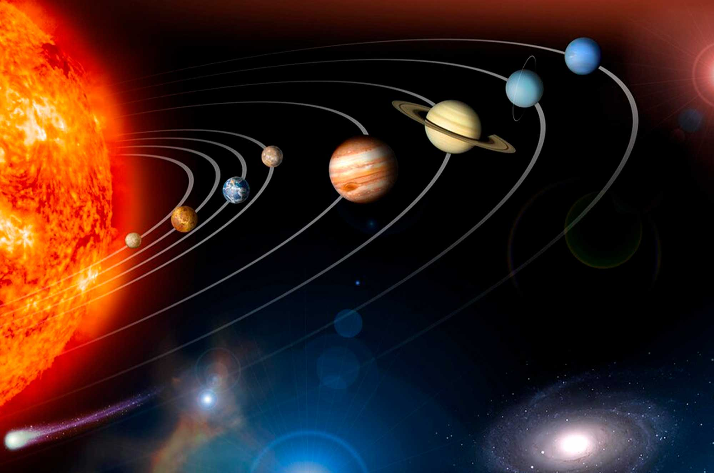
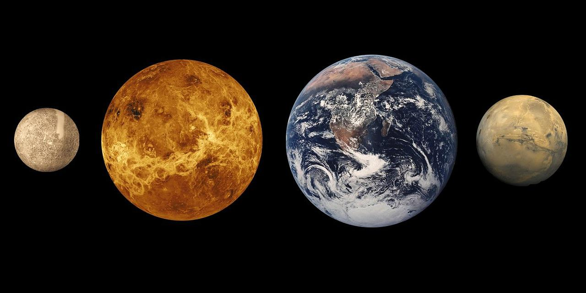
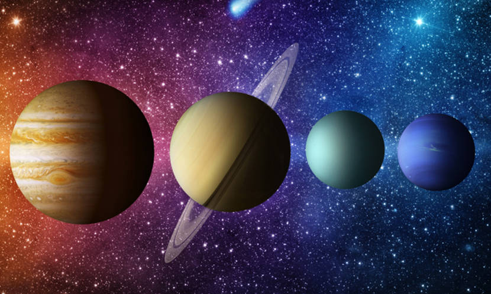
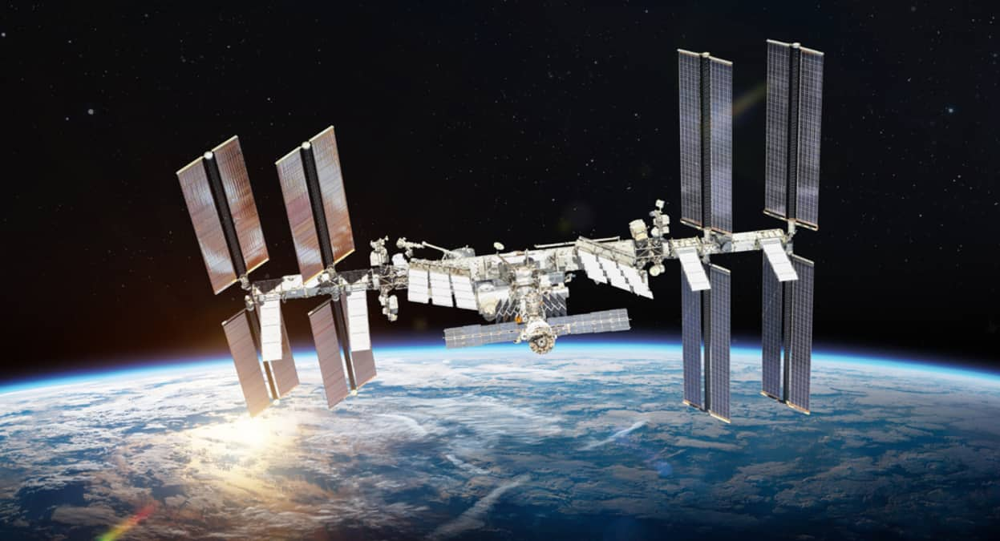

Planetas Rochosos
São formados principalmente por rochas e metais.
- Mercúrio
- Vênus
- Terra
- Marte
O Sistema Solar é formado pelo Sol, oito planetas, luas, asteroides, cometas e diversos outros corpos celestes que permanecem sob a influência da gravidade solar.
O Sol concentra aproximadamente 99,8% de toda a massa do Sistema Solar e fornece energia para os planetas.

São formados principalmente por rochas e metais.
Possuem grande quantidade de gases e enormes dimensões.


A exploração espacial permitiu compreender melhor os planetas, estrelas e galáxias.
Missões enviadas por diferentes países já pousaram em Marte, visitaram Júpiter e Saturno e alcançaram regiões muito além de Plutão.
Telescópios espaciais continuam revelando novas descobertas sobre o Universo.

Saiba mais no site da NASA .